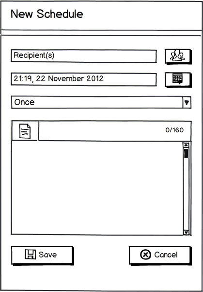

Jadwal Increment (1/5)
Metode pengembangan aplikasi yang digunakan dalam pembuatan aplikasi ini adalah metode incremental, dimana setiap increment-nya ditujukan untuk menyelesaikan setiap fitur yang ada pada aplikasi SMS Scheduler yang akan dibuat
 |
 |
SMS SCHEDULER
Keukeu Anggarani Putri [101511015]
Laras Ervintyana D.K.S [101511016]
Rizal Zulfikar Rinanda [101511028]
| - | Tidak adanya informasi bahwa pesan yang dikirim gagal atau berhasil dikirimkan |
| - | Tidak adanya informasi bahwa pesan yang dikirim telah diterima oleh recipient |
| - | Pada aplikasi di platform Java, nomor penerima pesan yang dapat digunakan harus ditulis secara manual, sehingga memungkinkan terjadinya salah pengetikkan |
| - | Pada aplikasi di platform Blackberry, mekanisme pengambilan nomor dari kontak harus diulang sebanyak penerima pesan yang akan digunakan |
| - | Belum tersedianya fitur template pesan khusus untuk memberikan ucapan selamat ulang tahun atau hari jadi. User harus mengubah sendiri tahun atau usia setiap kali akan mengirimkan pesan |
| - | Belum tersedianya pengingat (alert) sebelum jadwal pengiriman dilaksanakan |
Metode pengembangan aplikasi yang digunakan dalam pembuatan aplikasi ini adalah metode incremental, dimana setiap increment-nya ditujukan untuk menyelesaikan setiap fitur yang ada pada aplikasi SMS Scheduler yang akan dibuat
|
|
 |
 |
 |
 |
 |
 |
 |
 |
| 1. | membuat jadwal baru untuk mengirimkan pesan, |
| 2. | mengirimkan pesan berdasarkan jadwal yang sudah dibuat, |
| 3. | bersifat satu arah, |
| 4. | penerima pesan dapat ditulis secara manual maupun memilih dari kontak, |
| 5. | penerima pesan dapat dipilih lebih dari satu (multiple), |
| 6. | tersinkronisasi dengan kontak-kontak yang ada pada device, |
| 7. | mengirimkan pesan kepada nomor penerima yang diawali dengan menggunakan kode negara (misalnya 62 atau +62 untuk kode negara Indonesia), |
| 8. | melakukan pencarian nama atau nomor penerima pesan ketika sedang memilih dari kontak, |
| 9. | menampilkan notifikasi ketika pesan dikirim atau jadwal dilaksanakan, |
| 10. | menampilkan history pengiriman pesan, |
| 11. | jadwal yang sudah dibuat dapat diedit atau dihapus, |
| 12. | memberikan pilihan frekuensi pengiriman pesan (dikirim satu kali, setiap 5 menit, setiap hari, sampai dengan setiap tahun), dan |
| 13. | pengaturan awal untuk tanggal dan waktu yang ditampilkan ketika akan membuat jadwal (tanggal dan waktu sebelum diset oleh user) disesuaikan dengan tanggal dan waktu sistem. |
Fungsi Produk |
|
| 1 | Membuat schedule pengiriman pesan |
| 2 | Menghapus schedule pengiriman pesan |
| 3 | Mengubah/ meng-edit schedule pengiriman pesan |
| 4 | Menghentikan sementara (pause) schedule pengiriman pesan |
| 5 | Mengelompokkan schedule pengiriman pesan |
| 6 | Mengirimkan pesan sesuai schedule yang sudah dibuat |
| 7 | Menampilkan alert |
| 8 | Menampilkan notifikasi pengiriman pesan |
| 9 | Mengelompokkan schedule pengiriman pesan |
| 10 | Template pesan |
| 11 | User Setting |
Use Case Diagram Aplikasi SMS Scheduler |
E-R Diagram Aplikasi SMS Scheduler |
<-- Home Page New Schedule --> |
 |
 |
|||
Warning |
|||
|
Home Page |
New Schedule |
||
 |
 |
 |
||||
Contact Picker |
||||||
Date and Time Picker |
Save Schedule |
Date and Time Picker |
||
Nomor Requirement Deskripsi Status Implementasi [REQ F - 01.1] Aplikasi menyediakan fitur untuk membuat jadwal pengiriman pesan
√ [REQ CRT - 01] Aplikasi dapat menerima input nomor recipient secara manual.
√ [REQ CRT - 02] Aplikasi dapat menerima input nomor recipient dari nomor kontak pada device.
√ [REQ CRT - 03] Aplikasi dapat menerima input nomor recipient dari grup kontak pada device.
- [REQ CRT - 04] Aplikasi dapat menggunakan multiple recipient.
√ [REQ CRT - 05] Aplikasi dapat memvalidasi input waktu pengiriman.
√ [REQ CRT - 06] Aplikasi dapat menampilkan pesan error jika waktu pengiriman yang diinputkan adalah waktu lampau.
√ [REQ CRT - 07] Aplikasi menyediakan pilihan frekuensi pengiriman.
√ [REQ CRT - 08] Aplikasi dapat menggunakan template yang sudah dibuat.
- [REQ CRT - 09] Aplikasi dapat menyimpan schedule baru di database
√ [REQ CRT - 10] Aplikasi dapat melakukan pengecekan content schedule untuk membedakan penyimpanan schedule ke database (normal message dan typical message).
√ [REQ F - 02] Aplikasi dapat melakukan pengiriman pesan sesuai dengan schedule yang sebelumnya dibuat oleh user.
√
/
#{kind=link}
{kind=link}
{kind=link}
{kind=link}
{kind=link}
{kind=link}
{kind=link}
{kind=link}
{kind=link}
{kind=link}